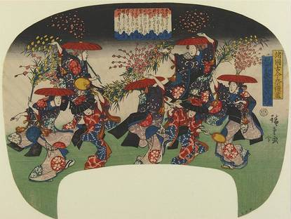
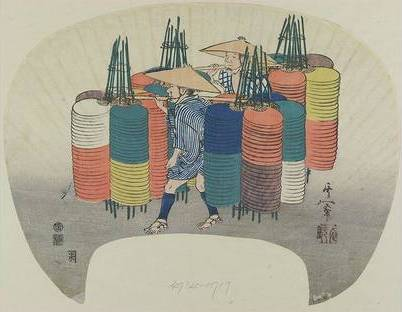
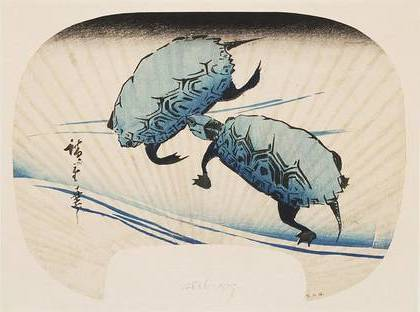

Japanese Woodblock Prints (Ukiyo-e)
From the Victoria and Albert Museum.

Utagawa Kuniyoshi, Takiyasha the Witch and the Skeleton Spectre. c. 1844. Woodblock print. Victoria and Albert Museum, London.
Produced in their many thousands and hugely popular during the Edo period (1615–1868), these colourful woodblock prints, known as ukiyo-e, depicted scenes from everyday Japan.

Utagawa Toyokuni, The Kabuki Actor Ichikawa Omezo I in the Drama Shibaraku, 1819. Woodblock print. Victoria and Albert Museum, London.
Ukiyo-e (浮世絵) literally means "pictures of the floating world." The "floating world" referred to the licensed brothel and theatre districts of Japan's major cities during the Edo period. Inhabited by prostitutes and Kabuki actors (Kabuki is a traditional Japanese form of theatre), these were the playgrounds of the newly wealthy merchant class. Despite their low status in the strict social hierarchy of the time, actors and courtesans became the style icons of their day, and their fashions spread to the general population via inexpensive woodblock prints.
The ukiyo-e style was developed in 1765 and remained popular until the closing decades of the Meiji period (1868–1912). While only the wealthy could afford paintings by the artists of the day, ukiyo-e prints were enjoyed by a wide audience because they could be produced quite cheaply and in large numbers.
Perhaps the most iconic of all ukiyo-e prints is Hokusai's Great Wave off the Coast of Kanagawa. The print, part of the series Thirty-Six Views of Mount Fuji, features a huge arching wave in the foreground which threatens to consume the two boats below, while Mount Fuji sits serenely in the distance, seemingly framed by the wave. Centuries of peace during the Edo period and the development of a sophisticated road system had fostered a culture of leisure travel in Japan. This created a desire for prints of famous and beautiful landscapes which were bought as cheap souvenirs. At the same time, Western imports of prints and drawings represented new ways of looking at the world, which also encouraged an interest in drawing from life.
In contrast to portrayals of everyday life were the ukiyo-e depictions of heroism and myth. Japan has a long and rich tradition of folklore and storytelling, and traditional tales of heroes and villains, monsters and demons provided dramatic and popular subjects for woodblock prints.
Fan prints
Fans were commonplace accessories during the heat of summer, but they were also a popular format for prints. As everyday objects printed on paper, their regular use made them less likely to survive than other prints; however, the V&A collection includes a variety of fan prints, with a large number by one of the last great ukiyo-e masters, Utagawa Hiroshige.
Designs on fans often reflected the summertime: lively festivals represented in vibrant colours, lighter designs suggesting sun-drenched hazes or deep blues implying cooling relief. As deeply personal items, the fan designs also reveal the tastes and fashions of the people of Edo period Japan.
-

Utagawa Hiroshige, The Mochibana Dance at the Wakanoura Festival in Kii Province, 1843–47. Woodblock print. Victoria and Albert Museum, London.
-

Suzuki Kiitsu, Fan Sellers, 1832. Woodblock print. Victoria and Albert Museum, London.
-

Utagawa Hiroshige, Swimming Turtles, c. 1840–42. Woodblock print. Victoria and Albert Museum, London.